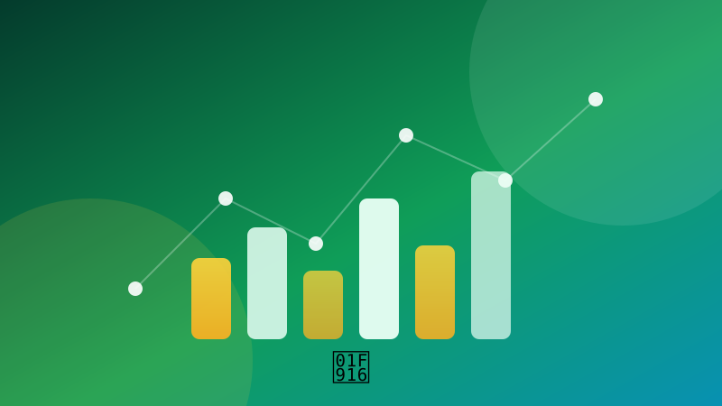

🤖 Data & AIBudget-tracker met grafiek
Houd uitgaven bij in CSV en maak een staafdiagram per categorie.
Speel dit idee opent de app en voert het volledige programma meteen uit. Je voortgang wordt lokaal in je browser bewaard.
1 Waar gaat dit over?
Je combineert bestanden lezen en schrijven met rekenen en data-visualisatie. Aan het eind heb je een script dat je uitgaven analyseert en laat zien waar je geld naartoe gaat.
2 Wat leer je?
3 Stap voor stap
Maak een CSV met uitgaven
Een CSV-bestand is platte tekst met komma's. De eerste regel bevat de kolomnamen. Maak dit bestand met de hand of met een kort script.
import csv
with open("uitgaven.csv", "w", newline="", encoding="utf-8") as bestand:
schrijver = csv.writer(bestand)
schrijver.writerow(["datum", "categorie", "bedrag"])
schrijver.writerow(["2026-11-01", "eten", 12.50])
schrijver.writerow(["2026-11-02", "vervoer", 3.20])
schrijver.writerow(["2026-11-03", "eten", 8.75])
schrijver.writerow(["2026-11-04", "entertainment", 15.00])Lees de uitgaven in
DictReader maakt van elke rij een woordenboek met de kolomnamen als sleutels. Zo hoef je geen indexen te onthouden.
import csv
with open("uitgaven.csv", newline="", encoding="utf-8") as bestand:
rijen = list(csv.DictReader(bestand))
for rij in rijen:
print(rij["datum"], rij["categorie"], "€", rij["bedrag"])
print("Aantal uitgaven:", len(rijen))Bereken het totaal per categorie
Met een woordenboek tel je bedragen op. get() geeft 0 als de categorie nog niet bestaat, zodat je veilig kunt optellen.
totalen = {}
for rij in rijen:
bedrag = float(rij["bedrag"])
categorie = rij["categorie"]
totalen[categorie] = totalen.get(categorie, 0) + bedrag
for categorie, bedrag in totalen.items():
print(f"{categorie}: €{bedrag:.2f}")
print(f"Totaal: €{sum(totalen.values()):.2f}")Teken een staafdiagram
Installeer matplotlib met pip install matplotlib. Daarna maak je in drie regels een grafiek. plt.show() opent een venster met de grafiek.
import matplotlib.pyplot as plt
plt.bar(totalen.keys(), totalen.values(), color="#1f5eff")
plt.title("Uitgaven per categorie")
plt.ylabel("Euro")
plt.xticks(rotation=30)
plt.tight_layout()
plt.show()Voeg een nieuwe uitgave toe
Vraag de gegevens met input() en schrijf één regel bij aan het bestand. Met mode 'a' voeg je toe in plaats van te overschrijven.
datum = input("Datum (JJJJ-MM-DD): ")
categorie = input("Categorie: ")
bedrag = float(input("Bedrag: "))
with open("uitgaven.csv", "a", newline="", encoding="utf-8") as bestand:
schrijver = csv.writer(bestand)
schrijver.writerow([datum, categorie, bedrag])
print("Toegevoegd!")4 Tips
- Gebruik Decimal in plaats van float als je met echt geld rekenen moet.
- Maak een maandfilter met rij['datum'].startswith('2026-11').
- Bewaar een budget per categorie en kleur de balken rood als je eroverheen gaat.